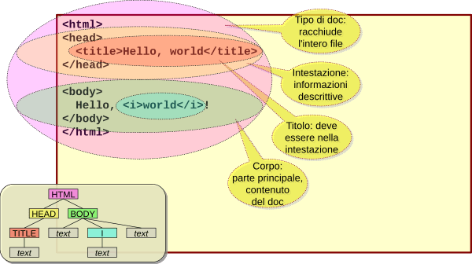
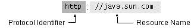
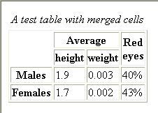
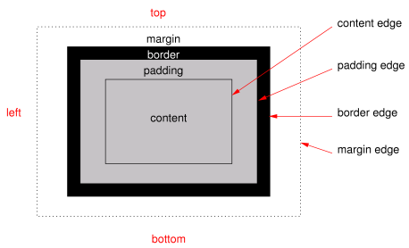

- Documenti strutturati, standard W3C: http://www.w3.org/html/
- HTML dichiara tipi di elementi
- Paragrafi, titoli, liste, collegamenti ipertestuali, elementi multimediali ecc.
- Tipo di elemento descritto da tre parti
- Tag di apertura, contenuto, tag di chiusura
Bla bla, <b>in grassetto.</b>, normale.
- Molti tag permettono la definizione di attributi
<a href="http://www.unipr.it/">UniPR</a>ideclass: attributi generici per assegnare ruoli logici
- Tag semplici non hanno un contenuto
<img src="blueribbon.gif" />

Introduzione all'informatica
Michele Tomaiuolo
Ingegneria dell'Informazione, UniPR
HyperText Markup Language
Anatomia di una pagina

Tag di formattazione testo
<p>Questo è un paragrafo.<br />A-capo ma stesso paragrafo.</p>
<p>Testo <strong>in grassetto</strong>, e poi
<em>in corsivo</em>.</p>
<h1>Il titolo più grande</h1>
...
<h6>Il titolo più piccolo</h6>
<div class="remark">
Struttura generica di livello blocco,
con un <span>elemento generico</span> inline.
</div>
Uniform Resource Locator
- Una URL è un riferimento per una risorsa

- Il nome della risorsa dipende interamente dal protocollo. Per HTTP include:
- Nome dell’host su cui risiede la risorsa
- Numero di porta cui collegarsi (default = 80)
- Percorso della risorsa sulla macchina
- Stringa di query (dopo
?) - Frammento:
iddi un elemento all’interno della risorsa (dopo#) - http://www.ietf.org:80/rfc/rfc2732.txt
Collegamenti e citazioni
<p id="par1">Il primo paragrafo. Vai su
<a href="http://www.unipr.it/index.html#news">
UniPR, riquadro News</a>.</p>
<p id="par2">Il secondo paragrafo. Torna al
<a href="#par1">primo paragrafo.</a></p>
<!-- si può attribuire un id ad ogni elemento, ma dev'essere univoco nella pagina -->
<blockquote cite="http://www.faqs.org/">
<p>The BLOCKQUOTE element contains text quoted
from another source.</p>
<address><a href="http://www.faqs.org/">
Da faqs.org</a></address>
</blockquote>
Liste
<ul>
<li>First item</li>
<li>Second item</li>
<li>Third item</li>
</ul>
<ol>
<li>First item</li>
<li>Second item</li>
<li>Third item</li>
</ol>
Tabelle
- Le tabelle HTML servono per incasellare dati (e non per gestire il layout dell'intera pagina!)
- Sono marcate con
<table> <table>contiene righe di celle, marcate con<tr>(dall'alto verso il basso ↓)- Ogni
<tr>contiene celle di dati, marcate con<td>(da sinistra a destra →) - Le celle di intestazione sono marcate con
<th>
Semplice tabella
<table>
<tr>
<td>northwest</td>
<td>northeast</td>
</tr>
<tr>
<td>southwest</td>
<td>southeast</td>
</tr>
</table>
Tabella con celle unite

<table>
<caption><i>A test table with merged cells</i></caption>
<tr>
<th rowspan="2"></th>
<th colspan="2">Average</th>
<th rowspan="2">Red eyes</th>
</tr>
<tr>
<th>height</th>
<th>weight</th>
</tr>
<tr><th>Males</th>
<td>1.9</td><td>0.003</td><td>40%</td></tr>
<tr><th>Females</th>
<td>1.7</td><td>0.002</td><td>43%</td></tr>
</table>
Tag per computer
- Codice inline:
<code> - Blocchi di codice:
<pre><code> - Input da tastiera:
<kbd> - Variabili e costanti:
<var> - Output inline:
<samp> - Catture di schermate testuali (blocchi di output)
<pre><samp>
Tag generici: div, span
- Aggiungere struttura e semantica ai documenti
spanraggruppa contenuto inlinedivraggruppa contenuto di livello blocco- Spesso assegnati attributi
ideclass - Non impongono nessun altro vincolo di presentazione al contenuto
- Elementi da usare assieme a fogli di stile
- Per adattare i doc. html ai vari bisogni e gusti
Id vs. class
- Mentre uno stesso valore di
classpuò essere attribuito a molti elementi su una pagina... iddeve essere unico all’interno del documento!- Non si può applicare uno stesso valore di
ida più elementi - Si possono assegnare più classi ad un solo elemento, separate da spazio. Es.
<p class="news gossip">Bla bla.</p>
Markup semantico
- Documenti privi di markup di presentazione
- Definire un vocabolario di classi semantiche...
- Da assegnare agli elementi con attributo class
- La cui presentazione può essere specificata in fogli di stile validi per tutto il sito
- Indicazioni di mozilla.org
- Accessibilità dei contenuti web
Html 5
- Nuovi elementi di struttura di Html 5
header, main, nav, aside, footerarticle, section, details, summarymenu, menuitem, figure, figcaption
- Altri nuovi elementi
video, audio, canvas, embedmark, timeoutput, progress, meter, datalist
- http://dev.w3.org/html5/html4-differences/
Cascading Style Sheets
In principio il web era popolato di semantici tag p ed h1; ma presto arrivarono font, center, color; le tabelle nascoste erano in agguato; era già scoppiata la Guerra dei Browser, tra Netscape e IE.
- Dopo specifiche W3C per HTML 4.0 e stili, tendenza a miglior supporto di standard
- CSS: migliore semantica e lavoro risparmiato
- Un solo file, esterno ai contenuti, controlla la presentazione di molte pagine web
- http://www.w3.org/Style/CSS/
Foglio di stile esterno
- Ideale, soprattutto, per un sito di molte pagine
- Cambiare l’aspetto, modificando un solo file
- Ogni pagina deve essere collegata al file css
<head>
...
<link rel="stylesheet" type="text/css" href="mystyle.css" />
</head>`
- Browser formatta secondo
mystyle.css - CSS scritto con comune editor di testo
body { background: url("images/back40.gif") }
p { margin-left: 20px }
Stili a cascata
- Stili raccolti a cascata in “foglio di stile virtuale”
- Default del browser (priorità più bassa)
- Foglio di stile esterno (per molti documenti)
- Foglio di stile interno (per un singolo doc.)
- Stile inline (per un singolo elemento, priorità)
- Gli stili non sono HTML, hanno sintassi diversa
Sintassi degli stili
- La più semplice regola css è composta di tre parti: un selettore, una proprietà ed un valore:
selector { property: value }- Selettore: es. un elemento html da ridefinire
- Proprietà: aspetto cui assegnare nuovo valore
- Es. body ed elem. contenuti con testo in nero
body { color: black }
Attributi e selettori multipli
p {
text-align: center; /* attributes separated by semicolon */
color: red;
font-family: "sans serif"; /* string in quotation marks */
}
h1, h2, h3, h4, h5, h6 { /* selectors separated by comma */
color: rgb(0, 255, 0);
}
img {
float: right;
padding: 5px;
border: 1px solid #0000ff;
margin: 10px;
}
Selettori di classe e id
.important { text-align: center; }
p.gossip { display: none; }
#wer345 { font-size: 32px; font-weight: bold; font-style: italic; }
<h1 class="important">Centered heading</h1>
<p class="news gossip">Gossip's not displayed.</p>
<h1 id="wer345">Some specific heading</h1>
<p class="important">More text.</p>
Colori e dimensioni
- CSS1: 16 colori, come palette VGA di Windows
aqua, black, blue, fuchsia, gray, green, lime, maroon, navy, olive, purple, red, silver, teal, white, yellow- Es.
fuchsia == rgb(255, 0, 255) == #FF00FF
- Dimensioni box e testo
px: in pixel (fissa rispetto risoluzione monitor)pt: punti tipografici, 1/72 polliceem: rispetto a dimensione font (carattere X)%: rispetto alla dimensione (di font, o spazio) dell’elemento genitore
Box model

margin, padding, border-width– 1-4 valoriborder-style–none, dotted, dashed, solid...border-color– Coloreborder-radius– 1-4 valori (CSS3)
Sfondo e ombra
background-color– Colore di sfondobackground-image–url(…), nonebackground-image–linear/radial-gradient(...)(CSS3)background-repeat–repeat, repeat-x / -y, no-repeatbackground-attachment–scroll, fixedbackground-position–top left, top center...background-size– Dimensioni immagine (CSS3)box-shadow– 2-4 valori (offset-x, offset-y, blur, distanza) + colore (CSS3)
Testo
color– Colore del testofont-size– Dimensionevertical-align– Inline, relativo alla riga di testo –top, middle, bottom, baseline, sub, supertext-decoration–none, underline, line-through, overlinefont-style–normal, italicfont-weight–normal, boldfont-family– Lista con priorità di nomi o famiglie di font (serif, sans-serif, cursive, fantasy, monospace)text-align–left, right, center, justify
Posizionamento
position– Posizionamento –relative, absolute, fixedfloat– Elementi flottanti –left, right, nonez-index– Numero (valori più alti in primo piano)overflow–visible, hidden, scroll, autovisibility–visible, hidden(occupa spazio)display–block, inline, none(non occupa spazio)- Blocco centrato:
margin-left: auto; margin-right: auto; width: 50%;
<Domande?>
Michele Tomaiuolo
Palazzina 1, int. 5708
Ingegneria dell'Informazione, UniPR
sowide.unipr.it/tomamic